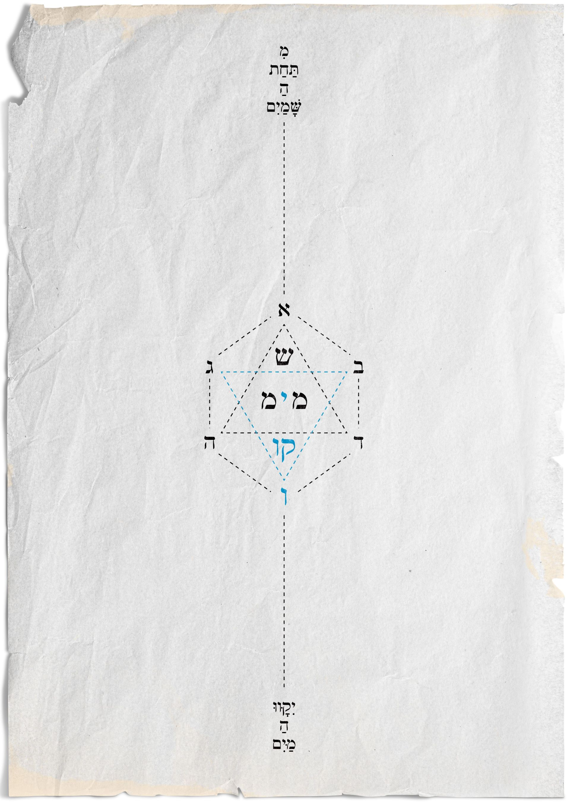

"יִקָּווּ הַמַּיִם מִתַּחַת הַשָּׁמַיִם אֶל־מָקוֹם אֶחָד וְתֵרָאֶה הַיַּבָּשָׁה" (בראשית א ט)
סיפור קוד "המים".
"בְּרֵאשִׁית בָּרָא אֱלֹהִים אֵת הַשָּׁמַיִם וְאֵת הָאָרֶץ. וְהָאָרֶץ הָיְתָה תֹהוּ וָבֹהוּ וְחֹשֶׁךְ עַל־פְּנֵי תְהוֹם וְרוּחַ אֱלֹהִים מְרַחֶפֶת עַל־פְּנֵי הַמָּיִם" (בראשית א א)
כבר בפסוקים הראשונים של ספר בראשית מתברר סוד מופלא. אלוהים בורא את השמיים ואת הארץ אבל המים היו כבר מקודם, מלפני "בראשית". אז מה הם המים? חומר? רוח? שפע אין־סופי? כמים כן התשובות, זורמות לאין־סוף. אך אם ננסה להבין את כלי קיבולת המים נוכל ללמוד איך לאגור יותר ויותר מהם ולזכות בזרם של שפע אין־סופי.
מים - אותיות המים מורכבות מ־ מ י מ - וקריאה מימין לשמאל או משמאל לימין תלמדנו שהם שלמים בעצמם מכל צד. גם ה־ים המוגדר בעולמנו כמכל הקיבול הגדול ביותר למים, נמצא בתוך המילה מימינה ומשמאלה, דבר שמחזק את ההבנה שהמים מכילים בתוכם גם את השפע וגם את הכלי המקבל אותם.
אי אפשר שלא להתייחס לדמיון בין - מ י מ - לנוסחת המים - H2O פעמיים מ"ם (H) וביניהן יו"ד (O). כמו כן, האות מ' במילוי (במובן של שם האות) נכתבת: מ"ם, ומורכבת משתי אותיות מ׳, כאילו שהאות מייצרת את עצמה בתנועה היא אין־סופית. כשמוסיפים את האות י' ש"מרחפת על פני המים" (האות היחידה בעברית שמרחפת מעל קו האותיות) נוצר משהו אין־סופי ביסודו הרוחני.